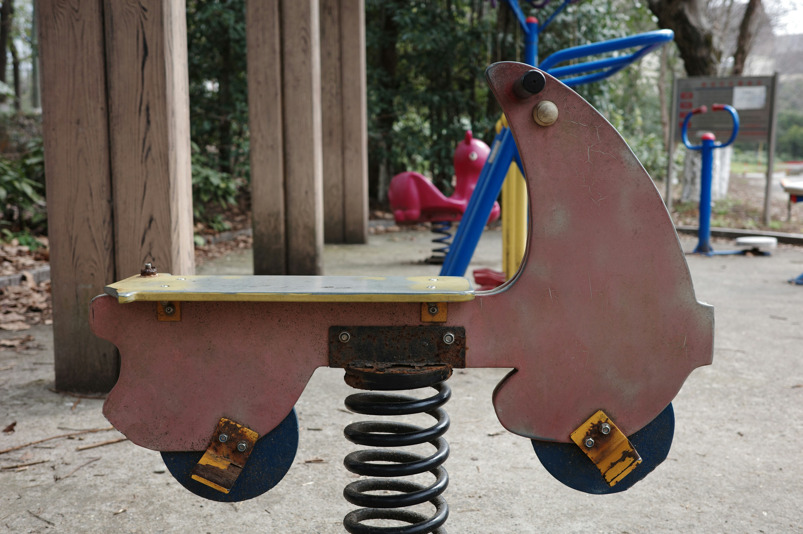

Use zones should extend at least 1.8 m (6 ft) from the perimeter of equipment.
Outdoor + Indoor Facility
Children's Play Areas
Safe play areas designed around impact-attenuating surfacing, clear fall zones, and durable equipment.

Photo by 022 873 on Unsplash
Court Line Markings
Use zoneMinimum 1.8 m (6 ft) around equipment
Recommended Buffer / Run-Off
Surfaces Used
EPDM rubber
Synthetic turf with shock pads
Rubber tiles
Certifications & Standards
CPSC
Design & Performance Notes
Play areas require safe fall zones and surfaces that reduce injury risk. Layouts are planned to avoid overlapping use zones and maintain clear supervision sightlines.
Material selection is driven by durability, drainage, and ease of maintenance to keep spaces safe year-round.
Typical Build Scope
Sub-Base Work
Top Flooring: EPDM rubber, Synthetic turf with shock pads, Rubber tiles
Fencing
Lighting
Accessories / Civil Works
Get a call from our team for a quotation
Tell us about your project and we will recommend the right surface and standards.
Request a call